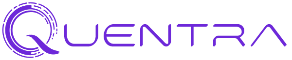
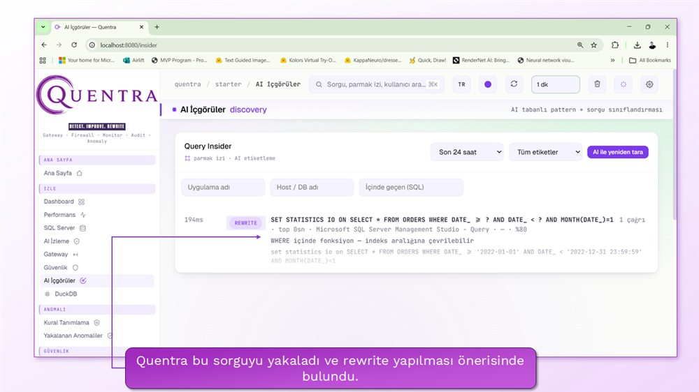
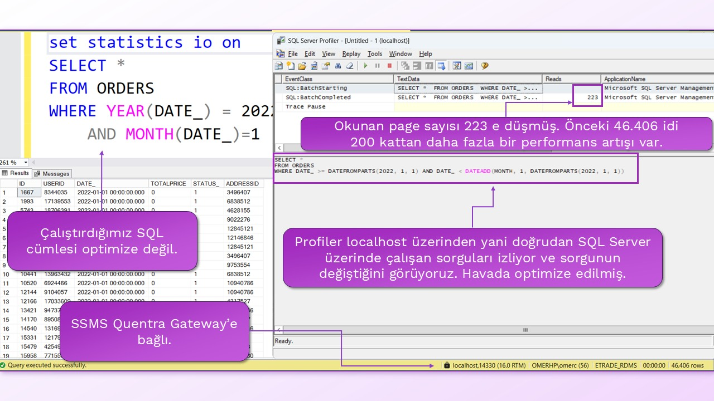
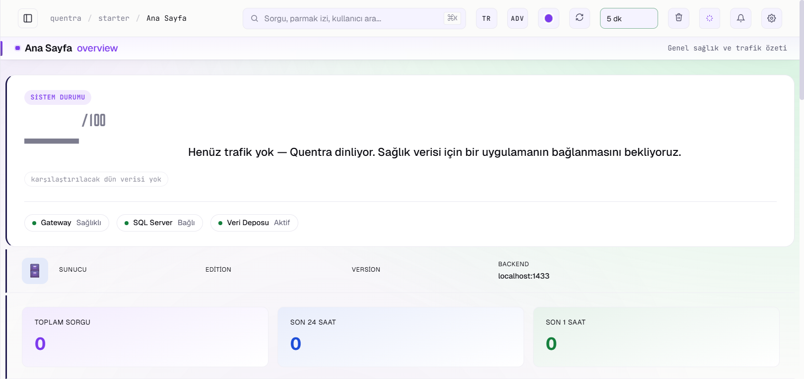

Veritabanınıza giden her sorgu
önce Quentra'dan geçer.
Görür. Korur. Hızlandırır. SQL Server için yapay zekâ destekli güvenlik ve performans ağ geçidi.
Tek Kurulum, Tek Servis,
Tek Arayüz
Quentra, Microsoft SQL Server'ın önüne konumlanan, TDS protokolünü anlayan bir reverse proxy'dir. Ajan kurulmaz, veritabanına eklenti yüklenmez, uygulama kodu değişmez. Uygulamanızın bağlantı dizesindeki portu değiştirirsiniz; o andan itibaren her sorgu Quentra'nın içinden geçer.
Bu konum ona benzersiz bir güç verir: trafiği yalnızca izlemek değil, sorgu daha veritabanına ulaşmadan müdahale etmek. Veritabanı güvenlik duvarı, aktivite izleme (DAM) ve AIOps işlevlerini tek üründe toplar.
Her Sorguyu Görür
- Kim, hangi uygulamadan, hangi makineden, ne zaman, hangi sorguyu çalıştırdı
- Oturum bazında kullanıcı, uygulama adı, istemci ve veritabanı bilgisi
- Parmak izi (fingerprint) bazlı sorgu istihbaratı
Saldırıları Anlık Engeller
- SQL injection, veri sızdırma, yetki istismarı tespiti
- Anormal davranışlar milisaniyeler içinde yakalanır
- Eşleşen sorgu yeniden yazılır, uyarı üretir veya engellenir
Performansı Artırır
- Sorgu önbelleği — tekrarlayan okumalar SQL Server'a hiç gitmez
- Otomatik sorgu yeniden yazma (rewrite)
- Yavaş sorgu analizi ve AI destekli index önerileri
Tasarrufu Dolar Olarak Ölçer
- Engellenen gereksiz disk I/O (GB) → dolar karşılığı
- Kazanılan sorgu süresi (saat/ay) ve Azure DTU katman tasarrufu
- DAM, DB firewall ve AIOps konsolidasyon değeri, yıllık geri ödeme süresiyle
Veritabanınızı izleyebiliyorsunuz.
Ama müdahale edemiyorsunuz.
Performans
- SARGable olmayan sorgular indeksleri devre dışı bırakır, tabloyu baştan sona taratır.
- Kötü desenler (SELECT *, WHERE içinde fonksiyon) üretimde fark edilmeden çalışır.
- Kaynağı tüketen sorgu bulunana kadar iş çoktan yavaşlamıştır.
Quentra ile: kötü desen anında yakalanır, sorgu havada optimize edilir — bu sayfadaki vakada 208 kata varan kazanç ölçüldü.
Güvenlik
- SQL injection uygulama katmanı korumalarını aşabilir; veritabanı önünde duvar yoktur.
- Kimin hangi tabloyu toplu çektiği çoğu zaman bilinmez.
- Brute-force ve şüpheli oturumlar sessizce ilerler.
Quentra ile: 50'ye yakın imzalı injection duvarı ve ~75 kurallık anomali motoru saldırıyı milisaniyeler içinde keser.
İzleme
- Denetim izi eksikse olay sonrası kanıt da yoktur.
- Klasik araçlar izler, raporlar — ama sorgu akışına dokunamaz.
- Alarm gürültüsü içinde kök neden kaybolur.
Quentra ile: her sorgu kayıt altındadır; AI, alarm gürültüsü yerine kök nedeni ve önerilen aksiyonu söyler.
Quentra izlemekle kalmaz — araya girer: sorguyu görür, gerekirse yeniden yazar, gerekirse durdurur.
Sorgunun Yolculuğu
Quentra her bağlantıyı TDS protokolü seviyesinde ayrıştırır ve sıcak yolu yavaşlatmadan analiz eder. Bu yolculuğu, güvenlikten optimizasyona uzanan 11 kahraman modülü birlikte yönetir.
11 Kahramanı Keşfedin ↓Her Modül
Bir Kahraman
Quentra'nın 11 modülünün her biri bir kahramanla temsil edilir. Karta tıkladığınızda modülün ne yaptığı ve teknik yetenekleri panelde açılır.
Bir Sorgunun Dönüşümü
Gerçek demo: optimize olmayan bir sorgu Quentra Gateway'den geçerken yakalanır, kurala bağlanır ve "havada" yeniden yazılır. Uygulama tarafında tek satır değişmez.
Optimize olmayan sorgu
WHERE içinde YEAR() / MONTH() fonksiyonları kullanılmış. DATE_ üzerinde index olsa bile sistem kullanamaz ve tabloyu baştan sona tarar.
Query Insider yakalar
Quentra'nın AI İçgörüler ekranı sorguyu parmak iziyle etiketler: REWRITE "WHERE içinde fonksiyon → indeks aralığına çevrilebilir." AI, tarih aralığı filtrelemesi öneriyor.

AI Kural Sihirbazı kural üretir
Çok turlu sohbetle kural tasarlanır; capture-group'lu regex ve rewrite şablonu otomatik oluşur:
Test Konsolu doğrular, gateway uygular
Kural önce trafiğe dokunmadan simüle edilir; sonra SSMS localhost,14330 üzerinden bağlanır — Profiler, sorgunun SQL Server'a değişmiş halde ulaştığını gösterir. Havada optimize edilmiş.

Not: 208 kat, bu vakadaki sorgu ve veri deseni için ölçülen kazançtır. Kazanç oranı sorgunun türüne, veri dağılımına ve mevcut indekslere göre değişir — her sorguda aynı oran beklenmemelidir. Buradaki değer, tek bir rewrite kuralının neler yapabildiğini gösteren gerçek bir saha ölçümüdür.
Güvenlik, Denetim,
Performans, FinOps
Veritabanı güvenlik duvarı, aktivite izleme (DAM) ve AIOps işlevlerini tek üründe toplar.
Güvenlik
- SQL Injection Duvarı — skor tabanlı dedektör, 50'ye yakın imza, sıcak-yenilenebilir imza listesi, ayarlanabilir eşik
- Davranışsal Anomali Motoru — YAML kataloglu ~75 kural, 6 kategori: sorgu davranışı, veri erişimi, injection, kimlik, performans, protokol
- Kimlik Anomalileri — alışılmadık makine/IP, eşzamanlı oturum, mesai dışı erişim, "imkânsız seyahat", uyuyan hesap uyanması, credential stuffing
- Veri Sızdırma Tespiti — tam tablo çekimi, ardışık ID taraması, hassas tablo toplu okuma, cross-DB okuma, FOR XML/JSON exfiltration
- IP Güvenlik Duvarı — beyaz/kara liste, kullanıcı başına bağlantı limiti, geçici bloklar
- Data Sentinel (PII) — TCKN, e-posta, telefon, kredi kartı, IBAN gibi kolonları otomatik sınıflandırır; maskeleme stratejisi önerir
- CIS Sıkılaştırma Denetimi — xp_cmdshell, CLR, sysadmin sayısı, TDE gibi CIS tabanlı yapılandırma kontrolleri
Denetim (Audit)
- Tam sorgu geçmişi — kim, ne zaman, hangi sorguyu, kaç ms'de, kaç satır dönerek çalıştırdı
- Login denetimi — başarısız girişler, brute-force tespiti
- Kural değişiklik geçmişi — kim hangi güvenlik kuralını ne zaman değiştirdi
- SIEM entegrasyonu — Syslog ve Splunk HEC dışa aktarım desteği
- Bildirimler — SMTP, Microsoft Teams, Slack ve genel webhook; önem seviyesi filtreli
Performans
- Yavaş sorgu analizi — parmak izi bazlı en yavaş sorgular, en çok kaynak tüketenler
- Sorgu önbelleği — tekrarlayan okuma sorguları SQL Server'a hiç gitmeden yanıtlanır
- Otomatik rewrite — bilinen kötü desenler (ör. SELECT *) kural ile dönüştürülür
- AI sorgu optimizasyonu — index önerisi, sorgu yeniden yazımı ve tahmini etki analizi
FinOps
- Disk I/O tasarrufu — engellenen gereksiz okuma (GB) dolar karşılığıyla raporlanır
- Zaman kazanımı — kazanılan sorgu süresi (saat/ay)
- Azure DTU tasarrufu — "S9'a çıkmanıza gerek kalmadı" analizi
- Ürün konsolidasyonu — Imperva/Guardium/DataSunrise sınıfı firewall, Splunk/Foglight sınıfı DAM ve Datadog sınıfı AIOps yerine tek ürün; yıllık geri ödeme süresiyle raporlanır
İsteğe Bağlı,
Sağlayıcı-Bağımsız AI
Quentra'nın AI katmanı bulutta da, tamamen şirket içinde de çalışır. Tüm çağrılar token, maliyet (USD) ve gecikme ile AI Usage sayfasında şeffaf raporlanır.
| Sağlayıcı | Senaryo |
|---|---|
| Fix Cloud | Yerli yapay zekâ servisi (FeyoNova) |
| Azure | Kurumsal bulut |
| OpenAI | Bulut |
| Google Gemini | Bulut + embedding |
| Ollama | Tamamen yerel, internet gerektirmez |
AI ile Neler Yapılır?
- "Bugün ne değişti?" — günün özeti, sessiz kazanımlar ve gün hikâyesi sade Türkçe anlatılır
- 3 katmanlı akıllı alarm analizi — alarm gürültüsü yerine kök neden ve önerilen aksiyon
- Doğal dil → SQL — Türkçe soru sorun, sorguya çevrilsin
- AI Kural Sihirbazı — "mesai dışında maaş tablosunu okuyanı engelle" cümlesinden çalışan kural üretir
- Metrik Hafızası — 15 dakikalık metrik görüntüleri embedding ile saklanır; "geçen ay benzer yavaşlama olmuş muydu?" sorusuna cevap verir
- Yardım Asistanı (RAG) — ürün dokümantasyonu üzerinde soru-cevap
40+ Sayfa, TR/EN,
Basit ve Gelişmiş Mod
http://localhost:8080 üzerinde çalışan tek arayüzden tüm modüller yönetilir.

Ana Sayfa — Sağlık skoru 0–100, dashboard, performans ve SQL Server metrikleri tek ekranda.
Görüntüler ürünün gerçek arayüzünden alınmıştır.
Dakikalar İçinde Devrede
Tek kurulum dosyası, 5 adımlı sihirbaz, otomatik servis kaydı. 6 saatte bir sürüm kontrolü ve güncelleme öncesi otomatik yedek.
Sistem Gereksinimleri
- Windows 10/11 veya Windows Server 2016+
- Microsoft SQL Server 2012 – 2025 (Express, Standard, Developer, Enterprise)
- 4 GB RAM (yerel AI modeli için 16 GB önerilir)
%100 Yerli.
Sahada Kanıtlı.
Quentra, yılların veri platformu deneyimiyle geliştirilen, kurumsal ölçekte sahada çalışan yerli bir üründür.
%100 yerli, uzman imzalı
Microsoft Data Platform MVP'si Ömer Çolakoğlu tarafından, 25 yıllık sektör ve veri platformu deneyimi üzerine geliştirildi.
Gerçek kurumlarda çalışıyor
Logo Tiger, Netsis, Workcube ve özel geliştirilmiş birçok uygulamada, SQL Server'a bağlanan her sistemle uyumlu.
18M+ sorgu / gün
Enterprise-grade güvenlik, Go ile geliştirilmiş yüksek performans (sorgu başına ~300 µs ek gecikme) ve dakikalar içinde kurulum.
Sade, Yıllık,
Öngörülebilir
Üç katman; hepsinde gateway, kural motoru ve web arayüzü dahildir.
Pro
$1.890/yıl
Yıllıkta %17 avantaj
- 3 instance
- Sınırsız kural
- AI Asistan dahil
- 90 gün veri saklama
- Öncelikli destek
Enterprise
Özel teklif
Kuruma özel sözleşme
- Sınırsız instance
- ClickHouse desteği
- SIEM dışa aktarım
- RBAC / SSO
- On-prem seçenekleri
Güncel fiyatlar, indirme ve interaktif playground için resmî ürün sitesi: quentra.dev/tr
Sık Sorulan Sorular
Quentra nedir?
Quentra, uygulamalar ile SQL Server arasında çalışan, yapay zekâ destekli akıllı bir Database AI Gateway'dir. SQL trafiğini gerçek zamanlı olarak analiz eder, optimize eder, korur ve izler.
Performans
- AI Query Rewrite (sorgu yeniden yazımı)
- Smart Caching (akıllı önbellek)
- AI Index Advisor (indeks önerici)
- Execution Plan Analysis (yürütme planı analizi)
- Stored Procedure Optimizer
Güvenlik
- Database Firewall (veritabanı güvenlik duvarı)
- SQL Injection Protection
- Brute Force Protection
- Anomaly Detection (anomali tespiti)
- Inline Data Masking (veri maskeleme)
Yönetim & AI
- Observability & Monitoring (gözlemlenebilirlik ve izleme)
- Database Auditing (denetim)
- AI DBA Assistant
- AI Reporting & Analytics
- Application Analysis, Performance Dashboard, Alert Management, SQL Traffic Analytics
Quentra bir proxy midir?
Hayır. Quentra yalnızca bağlantıyı ileten klasik bir proxy değildir. SQL Server protokolünü, yani TDS'yi anlayan; sorguları analiz edip değiştirebilen, güvenlik politikaları uygulayabilen ve AI destekli kararlar alabilen akıllı bir Database AI Gateway'dir.
Quentra nerede çalışır?
Quentra, sizin sunucunuz neredeyse orada çalışır. İsterseniz SQL Server ile aynı sunucuda, isterseniz aynı ağdaki başka bir sunucuda konumlandırabilirsiniz. Bulutta veya kontrolünüz dışındaki uzak bir ortamda değil, doğrudan kendi altyapınızda çalışır.
Quentra'yı kurmak için uygulamamda neyi değiştirmeliyim?
Uygulamanızın kaynak kodunda herhangi bir değişiklik yapmanız gerekmez. Yalnızca connection string, yani bağlantı dizesi üzerindeki sunucu ve port bilgisini değiştirmeniz yeterlidir.
Quentra, veritabanı sunucusuyla aynı sunucuda çalışıyorsa bağlantı adresini şöyle kullanabilirsiniz:
<ip>,14330Başka bir ifadeyle, standart SQL Server portu yerine Quentra'nın dinlediği portu belirtmeniz yeterlidir.
Quentra, SQL cümlelerini performans için yeniden mi yazıyor?
Evet. Quentra'nın özelliklerinden biri, SQL cümlelerini yeniden yazabilme ve optimize edebilme yeteneğidir. Bu özellik özellikle kaynak koduna erişemediğiniz veya değiştiremeyeceğiniz eski (legacy) uygulamalarda avantaj sağlar.
Optimize edilmemiş SQL cümleleri, çalıştıkları sırada yeniden düzenlenerek optimize edilmiş hâlleriyle SQL Server'a gönderilebilir. Sorgunun ve verinin yapısına bağlı olarak bu işlem, binlerce kata kadar performans artışı sağlayabilir.
Quentra AI, SQL cümlelerini yanlış bir şekilde değiştirirse ne olur?
Quentra, SQL sorgularını belirli sorgu kalıpları, yani pattern'ler üzerinden takip eder. Optimize edilmemiş bir pattern tespit edildiğinde yeni optimizasyon önerileri üretir. Ancak öneri doğrudan canlı sisteme uygulanmaz.
Siz öneriyi onayladığınızda, onayınız doğrultusunda gelişmiş bir regex kuralı oluşturulur ve bundan sonraki eşleşen sorgular bu kurala göre işlenir. Bu mekanizma, bir yazılımcıya:
"Bu SQL cümlesini daha optimize bir şekilde yaz."
dedikten sonra, yazılımcının hazırladığı sorguyu size onaylatıp canlıya almasına benzer.
AI, SQL cümlelerini her seferinde kontrol ediyor mu? Gecikme olmuyor mu?
Quentra'da SQL cümleleri pattern, yani sorgu kalıbı olarak takip edilir. Bir sorgu, farklı parametrelerle gün içerisinde binlerce kez çalışsa bile Quentra açısından tek bir pattern olarak değerlendirilir.
AI bu pattern'i bir kez analiz eder. Pattern için bir kural oluşturulduktan sonra sonraki sorgularda doğrudan bu kural çalışır. Dolayısıyla AI her sorguda yeniden devreye girmez.
Quentra'da cache mekanizması nasıl çalışır?
Örneğin eski bir uygulamanızın, uzun zamandır unutulmuş bir zamanlayıcı nedeniyle değişmeyen bir veriye sürekli sorgu gönderdiğini düşünün. Quentra'da bu sorgu için bir cache kuralı tanımladığınızda sistem, sorguyu her seferinde SQL Server'a göndermek yerine istemciye önbellekteki sonucu döndürür.
Quentra, önbelleği sizin belirlediğiniz sürelerde otomatik olarak yeniler. Örneğin uygulama aynı sorguyu 10 saniyede bir gönderiyor olabilir; ancak Quentra gerçek sorguyu SQL Server üzerinde saatte bir kez çalıştırıp önbelleği yenileyebilir, aradaki isteklerin tamamına cache üzerinden cevap verebilir.
Quentra'nın kurulumu nasıl gerçekleşir?
Quentra'nın kurulumu, WinRAR kurulumu kadar hızlı ve kolaydır. EXE dosyasını indirdikten sonra kurulum ekranlarında ilerleyerek yaklaşık 30 saniye içerisinde kurulumu tamamlayabilirsiniz.
Quentra'nın audit log özelliği nasıl çalışır?
Çalışan her sorgu Quentra üzerinden geçtiği için kayıt altına alınabilir. Bu sırada şu bilgiler toplanır:
- Sorgunun kim tarafından çalıştırıldığı
- Ne zaman çalıştırıldığı
- Hangi bilgisayardan geldiği
- Hangi kullanıcı hesabıyla çalıştırıldığı
- Hangi SQL cümlesinin çalıştırıldığı
- Hangi uygulamadan gönderildiği
- Döndürülen satır sayısı (row count)
- Execution plan bilgileri
Bu işlemler, SQL Server Profiler özelliğinden bağımsız olarak gerçekleştirilir.
Quentra SQL Injection saldırılarını önler mi?
Quentra'da 50'ye yakın SQL Injection pattern'i bulunmaktadır. Bu pattern'ler yönetilebilir ve ihtiyaca göre düzenlenebilir. SQL Injection koruması aktif olduğunda sistem, saldırının içeriden veya dışarıdan gelmesine bakmaksızın şüpheli sorguları tespit eder ve yakalar.
Quentra'nın içinde hangi yapay zekâ modeli bulunmaktadır?
Quentra, kendi yapay zekâ modeliyle birlikte gelmez. Kullanıcı, kullanmak istediği yapay zekâ modelini veya sağlayıcısını seçebilir. Desteklenen seçenekler:
- Azure
- OpenAI
- Gemini
- Ollama
- Fix Cloud
Kendi yerel AI ortamınız bulunuyorsa Ollama üzerinden çalışabilirsiniz. Quentra ayrıca yerli yapay zekâ sağlayıcısı Fix Cloud ile de çalışmaktadır.
Quentra kullanırsam verilerim dışarı gider mi?
Hayır. Quentra, verilerinizden ziyade sorgularınızla ilgilenir. Bu yapı içerisinde verileriniz ne Quentra'nın kendisiyle ne de kullanılan yapay zekâ modelleriyle paylaşılır.
Quentra sistemi yavaşlatır mı?
Quentra, Go diliyle geliştirilmiş ve yüksek performans için optimize edilmiş bir uygulamadır. Bir sorguyu yeniden yazmadan doğrudan SQL Server'a iletmesi durumunda dahi sorgu başına oluşturduğu ek gecikme yaklaşık 300 mikrosaniyedir — bu, yaklaşık olarak bir milisaniyenin üçte birine karşılık gelir.
Quentra brute force saldırılarını engeller mi?
Evet. Quentra'da brute force saldırılarına karşı şu mekanizmalar bulunur:
- IP bazlı güvenlik kuralları
- Kara liste
- Beyaz liste
- Saldırı algılama mekanizmaları
Quentra hangi SQL Server sürümlerini destekliyor?
Quentra şu SQL Server sürümlerini destekler: 2012, 2014, 2016, 2017, 2019, 2022 ve 2025. Ayrıca tüm edition'larda çalışır:
- Express
- Standard
- Developer
- Enterprise
Quentra, Logo ve Netsis gibi uygulamalarda çalışır mı?
Quentra, SQL Server'a bağlanan tüm uygulamalarla çalışabilir. Bugüne kadar şu uygulamalarda kullanılmış veya çalıştırılmıştır:
- Logo Tiger
- Netsis
- Workcube
- Özel geliştirilmiş birçok custom uygulama
Quentra yerli bir ürün mü?
Evet, gururla. Quentra yüzde yüz yerli bir üründür. Microsoft Data Platform MVP'si Ömer Çolakoğlu tarafından, 25 yıllık sektör ve veri platformu deneyimi üzerine geliştirilmiştir.
Quentra'nın alternatifleri nelerdir?
Quentra kendi içerisinde 11 farklı özellik barındırmaktadır. Bu özelliklerden bazılarını ayrı ayrı sağlayan ürünler bulunmakla birlikte, özelliklerin tamamını tek bir platform içerisinde sunan küresel bir alternatif bulunmamaktadır.
Başka sorunuz mu var? info@feyonova.com ile iletişime geçin.
Quentra'yı Deneyin
Demo, PoC ve lisanslama için bizimle iletişime geçin — ya da resmî sitede interaktif playground ile kurmadan deneyin.